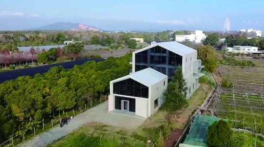
產地故事
神跡酒造座落於臺中外埔，位於大安溪與大甲溪之間的河階台地，擁有砂礫質土壤與豐富的水圳文化。早期后里圳流經外埔，滋養當地農田，也孕育水流東一帶的葡萄種植與釀酒文化。酒造以地瓜、甘蔗到秈米等地方物產為靈感，發展特色地酒，讓土地風味與地方記憶在酒香中延續。
一方水土，孕育一方風味；一季耕耘，醞釀歲月的甘美。以臺灣在地農作為起點，讓每一款酒展現土地獨有的風味與個性。
一方水土，孕育一方風味；一季耕耘，醞釀歲月的甘美。神跡酒造深信，酒的靈魂始於土地。以臺灣在地農作為起點，汲取不同地域的自然風味，融合四季氣候的變化與職人的釀造技藝，讓每一款酒都展現臺灣土地獨有的風味與個性。
以土地為根，以風味寫下臺灣。神跡酒造以臺灣風土與地酒文化為根，結合在地農產、釀造工藝與地方特色，讓傳統文化在創新中延續，釀出屬於臺灣的風土滋味。
品牌故事｜從釀造工藝的熱愛，走向臺灣地酒文化的探索。
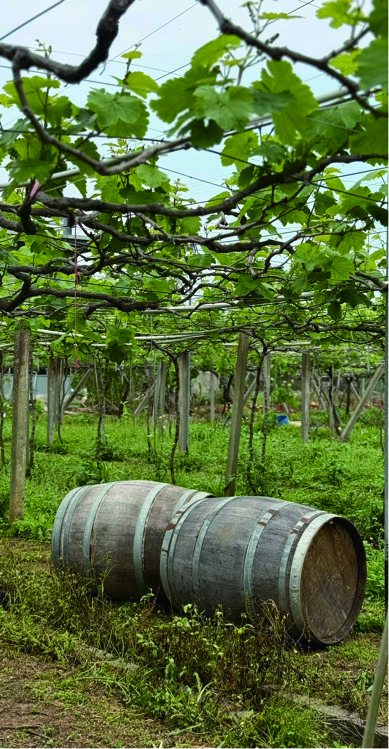
一杯酒，不只是風味的呈現，更承載著一片土地的歷史與文化。
神跡酒造的故事，源自創辦人陳千浩對釀造工藝的熱愛，以及對臺灣地酒文化的探索。曾赴法國勃根地大學研習釀造技術的陳千浩，在接觸不同國家的酒文化後，逐漸體會到酒與土地之間的深刻關係。1998年學成返臺後，他持續投入釀造研究，並從臺灣農業資源與歷史文獻中，尋找屬於這片土地的釀酒可能。
他發現，早期臺灣曾以米、番薯、甘蔗等農作物釀酒，擁有豐富的地方酒文化，卻隨著時代變遷逐漸淡出人們的生活。這也讓他開始思考：如果法國有葡萄酒、日本有地酒，臺灣是否也能釀出代表自己的酒？
為此，他進一步赴日本學習燒酎與泡盛的製麴及釀造技術，結合歐洲釀造經驗，發展適合臺灣農產與風土的釀酒方式。從葡萄酒到番薯燒酎、黑糖燒酎及臺灣泡盛，每一次嘗試，都是重新認識臺灣土地與釀酒文化的過程。
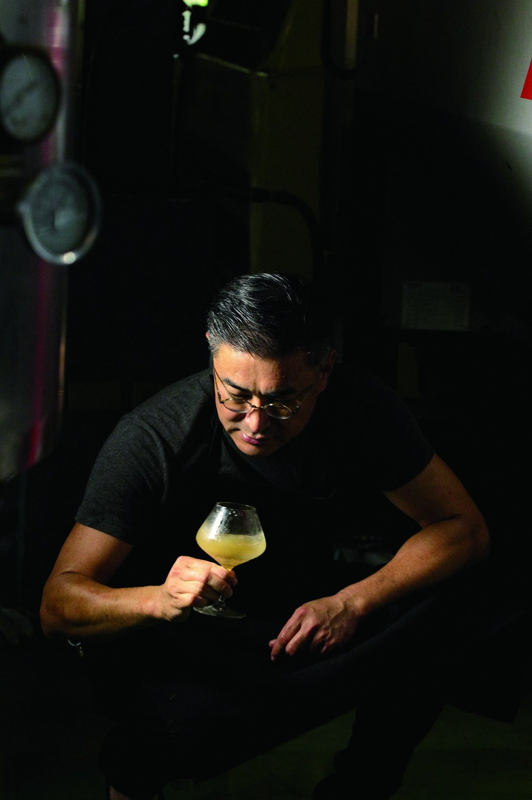
陳千浩為臺灣專業釀酒師，曾赴法國勃根地大學研習釀造技術，並取得葡萄酒釀造師資格。1998年返臺後，持續投入葡萄酒、蒸餾酒及臺灣地酒文化的研究與發展。
他擅長將歐洲釀造工藝與臺灣農業資源結合，從葡萄、番薯、甘蔗到稻米，探索不同農作物的釀造潛力，並融合法國蒸餾技術與日本麴菌工藝，研發具有臺灣風土特色的酒品。
其中，以臺灣金香葡萄釀造的「埔桃酒」，曾於2014年獲得巴黎世界酒類競賽金牌，展現臺灣在地釀造的實力。多年來，他致力於傳統釀造文化的研究與創新，並以神跡酒造為實踐理想的基地，期望讓逐漸被遺忘的臺灣地酒文化重新被看見。
以臺中外埔為起點，讓地方物產、農業記憶與釀造文化彼此連結。

神跡酒造座落於臺中外埔，位於大安溪與大甲溪之間的河階台地，擁有砂礫質土壤與豐富的水圳文化。早期后里圳流經外埔，滋養當地農田，也孕育水流東一帶的葡萄種植與釀酒文化。酒造以地瓜、甘蔗到秈米等地方物產為靈感，發展特色地酒，讓土地風味與地方記憶在酒香中延續。
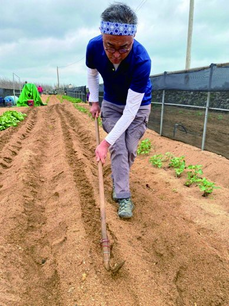
以臺灣在地農產為釀造核心，選用臺中金香葡萄、竹山紫心地瓜、澎湖黃金千貫、大甲秈稻及臺灣甘蔗等特色農產，探索不同品種的釀造潛力。埔桃酒、憨吉番薯燒酎、史詩臺灣泡盛與淬黑砂糖燒酎，呈現各種農產的風味特色。

從農作物的產地、季節與品種出發，將農業資源轉化為釀造創作，讓臺灣地酒成為認識地方風土與文化的另一種方式。
融合自然環境、釀造需求與跨文化工藝，打造屬於臺灣風土的釀造基地。
神跡酒造座落於臺中外埔，酒造設計融入自然環境與釀造需求，採用地下礫石層伏流水作為釀造水源，並以四層樓重力流設計，讓原料與酒液順著高度自然流動，減少機械幫浦的使用，兼顧釀造過程與酒液品質。
在釀造設備與技術上，結合源自法國干邑的銅製蒸餾設備，以及日本燒酎、泡盛的麴菌發酵技術，發展出融合國際工藝與臺灣風土的釀造特色。酒造以臺灣農產為創作靈感，從葡萄、番薯、甘蔗到稻米，持續探索不同原料的釀造可能。
神跡酒造以四層樓高的空間設計，讓酒液自然流動，減少機械泵浦介入。
葡萄經篩選與除梗後，藉由重力進入下方發酵槽；發酵、壓榨、沉澱、熟成，再一路流向裝瓶區。以空間高低差串起每一個釀造階段。
這樣的流程有助於減少氧化與污染，保留原料自然的香氣與風味。
篩選、除梗，讓葡萄自然落入下一層。
進行發酵與壓榨，酒液流入沉澱槽。
沉澱澄清後，進入橡木桶熟成。
熟成後進行澄清、裝瓶與貼標。
從麴菌、發酵到蒸餾與熟成，讓傳統技術與臺灣農產相互對話。
神跡酒造融合日本燒酎與沖繩泡盛的傳統製麴技術，投入黑麴菌的培養與應用研究。黑麴菌在發酵過程中會產生檸檬酸，降低發酵醪液的酸鹼值，有助於抑制雜菌生長，適合應用於臺灣高溫潮濕的氣候環境。透過麴菌培養、原料選擇與發酵條件調整，將傳統亞洲釀造技術融入臺灣在地農產。
導入重力流釀造概念，規劃四層樓的垂直釀造空間，讓原料與酒液順應地心引力自然流動，減少機械幫浦輸送所產生的攪動與物理擾動，兼顧製程效率與酒液品質。
引進法國干邑夏朗德式純銅蒸餾器，結合干邑雙重蒸餾技術與日本燒酎、泡盛的傳統麴法，透過蒸餾過程的細緻控制，呈現酒液不同的香氣、純淨度與層次。蒸餾完成後，酒液進入橡木桶熟成；不同桶材、熟成環境與時間，皆會影響酒液的香氣、口感與風味變化。
從建築、酒窖到周圍田園景色，感受土地與釀造工藝交會的空間。
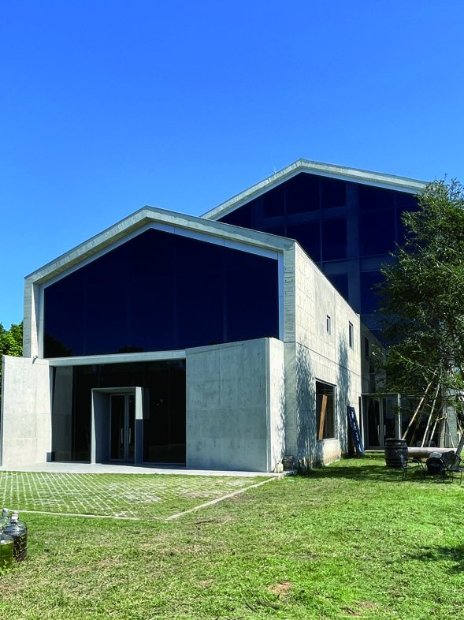
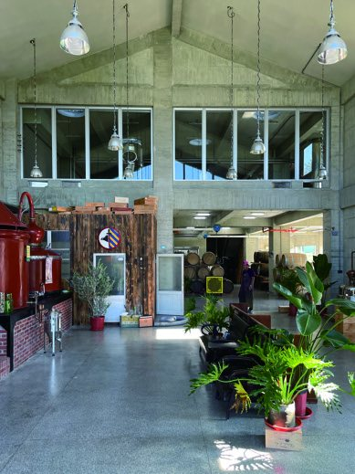
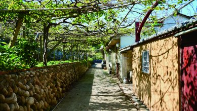
在青山綠野環繞的環境中，認識台灣在地釀造文化。手冊載明酒莊小旅行以 8 人以上成團。
走進酒莊空間，了解釀造流程、設備與職人故事。
從台灣在地農作出發，探索傳統與創新如何交會。
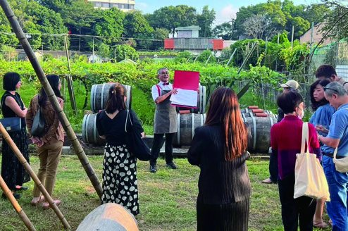
酒莊小旅行以 8 人以上成團，依團體需求安排參訪內容，相關時間與細節請洽酒莊。
酒莊手作體驗可依活動時間、預算與需求彈性安排。從葡萄挑選、手工榨汁，到後續由專業釀酒師接手釀造，體驗一段從原料到成品的旅程。
也可安排裝瓶、蜂蠟封蠟、紀念酒標貼標與親筆簽名等活動。
依活動目的、預算與團體需求，規劃合適的場地與活動內容。
可依預算提供不同菜色安排，從簡單套餐到桌邊服務，也可依活動需求洽談餐食合作，規劃合適的餐飲搭配內容。
適合品牌活動、團體聚會與主題活動，可整合場地、導覽、手作體驗及餐酒搭配。場地安排可依需求調整，價格與使用天數請直接洽詢酒莊。
以臺灣農產與地方風土為靈感，六款作品各自寫下土地、季節與釀造工藝的故事。
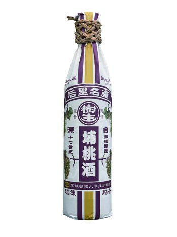
選用臺中外埔金香葡萄，結合白蘭地強化釀造工藝，展現蜂蜜、蜜餞、烏梅與太妃糖的馥郁香氣。入口酸甜均衡，尾韻優雅綿長，呈現臺灣葡萄獨有的豐富風味。
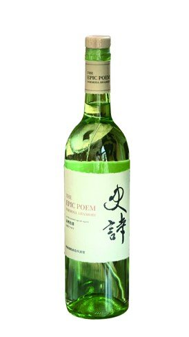
以臺灣番薯為原料，呈現番薯原有的甘香與自然氣息，帶有如烤番薯般的溫暖香氣。整體風味綿柔飽滿，帶著淡淡甜韻，展現樸實而溫潤的土地滋味。

選用臺中后里百年風土孕育的日本黑后葡萄，結合葡萄牙馬德拉酒熱熟成工藝，並經五年以上橡木桶熟成，交織出蜂蜜、蜜餞、烏梅、黑莓乾與太妃糖的馥郁香氣。入口酸甜交融，層次豐富，餘韻悠長。
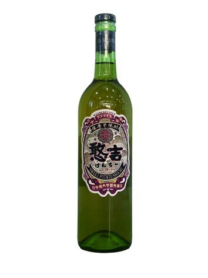
以黑砂糖為特色，展現黑糖與甘蔗蜜香，伴隨溫潤的熟成氣息。整體風味圓潤醇厚，甘香細緻，呈現溫暖而細緻的風味層次。
選用彰化大村的巨峰葡萄農損小果，凝聚果實濃縮的糖酸與香氣，並透過發酵前熱處理，萃取葡萄果皮中的甜美果香，將原本不起眼的小果粒，轉化為充滿土地特色的獨特風味。
運用大甲秈稻與自行培養黑麴菌研發，以黑麴與米香為基調，並帶有清雅的水梨與西洋梨果香。整體風味溫潤柔和，甘甜細緻，在淡雅香氣中留下悠長餘韻。
本區為酒莊品牌與產品文化資訊展示，非線上販售頁面。
提供中文、英文、日文、泰文、法文、德文與西班牙文導覽音檔。音檔由管理者自行放入網站資料夾。
如有參訪、團體活動、手作體驗或場地需求，請直接聯繫酒莊確認最新安排。